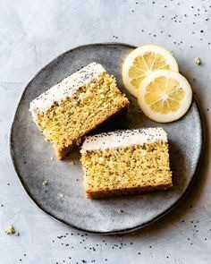

Wrinkled Grape and Lemon Peel Breakfast Cake
Ingredients
• 1 ½ C of wrinkled, mushy grapes
• Peel (grated into zest) of 1 lemon .
• 2 large eggs .
• ¼ C milk .
• ½ C plus .1 tbsp olive oil .
• 1 tsp van.illa extract .
• ½ C plus .1 tablespoon .sugar .
• 1 ½ C sel.f-rising four. .
• 2 Tbsp walnuts/pecans (optional).
Directions
1. Preheat the oven to 350 degrees .
2. Wash the grapes, dry well and set aside .
3. In a large bowl, whisk together the eggs, milk, 1/2 cup olive oil, vanilla, lemon peel zest, and 1/2 cup of the sugar then stir in the four and mix well until smooth .
4. Grease a 9-inch tart/pie pan with 1 tablespoon of olive oil and pour in the batter.
5. Place the grapes evenly on top of the batter to cover the entire surface and press the grapes halfway into the batter.
6. Scatter nuts (optional) evenly on top and sprinkle with the remaining tablespoon of sugar.
7. Bake 45 minutes until golden brown.
